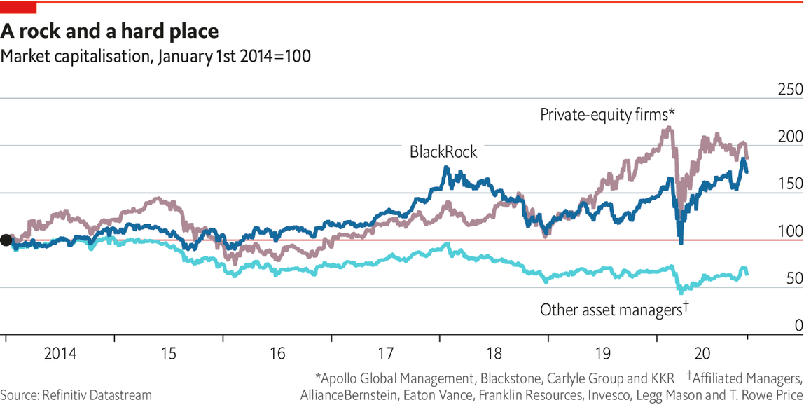
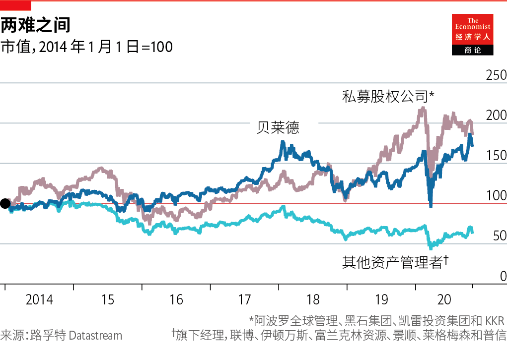

2020-11-30T15:09:03+00:00
Private markets
私募市场
私募市場
Taking back control
收回控制权
收回控制權
Privates are what listed assets are not: niche, illiquid and fee-rich
私募资产和上市资产颇有不同：利基、流动性差、费用高【专题报道《资产管理》系列之二】
私募資產和上市資產頗有不同：利基、流動性差、費用高【專題報道《資產管理》系列之二】

THE NOTION of the “first 100 days” as critical for a new administration goes back at least as far as Franklin Roosevelt. He first used the term in a radio address in 1933, shortly after becoming America’s 32nd president. Private equity has its own version. The 100-day plan sets priorities for a bought-out business. The new owner looks for “quick wins”—standard remedies for the most glaring operating problems. Fixes may include updating computing systems, slimming the array of products or closing loss-making divisions. The plan also prescribes the easiest ways to raise cash to pay off hefty debts used to acquire the firm.
认为“百日新政”对一个新政府至关重要的理念至少可以追溯到富兰克林·罗斯福。在成为美国第32任总统不久后，他于1933年在一次广播演说中首次使用了这个词。私募股权有其自己的版本。“百日计划”为收购业务设定了优先事项。新的所有者寻求“见效快”——针对最明显的运营问题的标准补救措施。解决方法可能包括更新计算系统、缩小产品范围或关闭亏损部门。该计划还制定了最简单的筹集现金方法，以偿还用于收购该公司的巨额债务。
認為“百日新政”對一個新政府至關重要的理念至少可以追溯到富蘭克林·羅斯福。在成為美國第32任總統不久後，他於1933年在一次廣播演說中首次使用了這個詞。私募股權有其自己的版本。“百日計劃”為收購業務設定了優先事項。新的所有者尋求“見效快”——針對最明顯的運營問題的標準補救措施。解決方法可能包括更新計算系統、縮小產品範圍或關閉虧損部門。該計劃還制定了最簡單的籌集現金方法，以償還用於收購該公司的巨額債務。
The promise of private asset management (buy-out funds, private debt, venture capital and so on) is that endurance will be rewarded. Investors in private equity must lock up their money for years; they cannot easily sell out. Big stakes in private assets trade quite rarely. But there is an upside. Private managers are able to eke out better returns than would be possible if their assets were traded each day. Investors in the public markets like predictable short-term profits and strategic certainty. They are too skittish to invest in a corporate turnaround. If the boss of a listed company unveiled a 100-day plan, it might spark a run on the shares.
私募资产管理（并购基金、私募债务、风险投资等）的承诺是，坚持会有回报。私募股权投资人必须将资金锁定多年；他们无法轻易卖出。私募资产中的大额股权很少交易。但有一个好处。与每天进行资产交易相比，私募管理者可以获得更高的回报。公共市场的投资者喜欢可预测的短期利润和战略确定性。他们太善变了，不愿投资于公司转型。如果一家上市公司的老板公布了一项百日计划，可能引发市场抛售股票。
私募資產管理（併購基金、私募債務、風險投資等）的承諾是，堅持會有回報。私募股權投資人必須將資金鎖定多年；他們無法輕易賣出。私募資產中的大額股權很少交易。但有一個好處。與每天進行資產交易相比，私募管理者可以獲得更高的回報。公共市場的投資者喜歡可預測的短期利潤和戰略確定性。他們太善變了，不願投資於公司轉型。如果一家上市公司的老闆公布了一項百日計劃，可能引發市場拋售股票。
That is the sales pitch—and plenty of investors buy it. Desperate for returns, pension funds have piled into private markets in recent years. A survey by Morgan Stanley finds that 64% of institutional investors plan to increase their allocation to private equity this year and only 5% to reduce it—a net balance of 59%. The balance for venture capital was 39%; for private debt, 33%. For listed assets, the balance was negative. Private markets are at the niche end of asset management. Only around $4trn or so is invested in private equity, about half of total assets under BlackRock’s management alone. But private assets are where the fees are. The question is whether performance and fees can be sustained.
这是一种销售话术——很多投资者都信了。迫切需要回报的养老金近年来已经涌入私募市场。摩根士丹利的一项调查发现，今年有64%的机构投资者计划增加对私募股权的配置，而只有5%的机构投资者计划减少——净差额为59%。风险投资的差额为39%；私募债务为33%。上市资产的差额则为负。私募市场处于资产管理的利基端。目前仅约四万亿美元的资金投资于私募股权，相当于贝莱德一家管理的资产总额的一半左右。但私募资产的收费高昂。问题在于其业绩和费用是否可持续。
這是一種銷售話術——很多投資者都信了。迫切需要回報的養老金近年來已經湧入私募市場。摩根士丹利的一項調查發現，今年有64%的機構投資者計劃增加對私募股權的配置，而只有5%的機構投資者計劃減少——凈差額為59%。風險投資的差額為39%；私募債務為33%。上市資產的差額則為負。私募市場處於資產管理的利基端。目前僅約四萬億美元的資金投資於私募股權，相當於貝萊德一家管理的資產總額的一半左右。但私募資產的收費高昂。問題在於其業績和費用是否可持續。
Of several influences behind the growing interest in private assets, three stand out. The first is the example of successful pioneers. In the 1980s and 1990s the endowment funds of a handful of big American universities shifted much of their invested funds into private assets. The largest retirement schemes in Canada, led by the Ontario Teachers’ Pension Plan (OTPP), have a similar approach: run the plan like a business, pay for good in-house fund managers and invest in lots of private assets. This model has been copied by sovereign-wealth funds in other parts of the world. The intellectual leader of such investing was David Swensen, at Yale. He argued that, since life-insurance funds, endowments and sovereign-wealth funds have obligations stretching far into the future, they can afford to take a long-term view. It is hard to be rewarded for diligence in listed stocks. Private markets, in contrast, are inefficient. Data are hard to come by, assets are complex and trickier to appraise and waiting for opportunities to pay off requires patience. But the right homework brings rewards.
有几种影响力推动了对私募资产兴趣的增长，其中三种十分醒目。首先是成功开拓者的榜样。在1980年代和1990年代，几家美国大型高校的捐赠基金将其大部分投资基金转移到了私募资产上。加拿大最大的退休计划由安大略省教师退休金计划（OTPP）领导，也采用了类似的做法：像企业一样经营该计划，为出色的内部基金经理付费，并大量投资私募资产。这种模式已经被世界其他地区的主权财富基金效仿。此类投资的学术领袖是耶鲁大学的大卫·史文森（David Swensen）。他认为，既然人寿保险基金、捐赠基金和主权财富基金的责任都延续到遥远的将来，它们可以负担得起用长远的眼光看问题。勤奋研究上市股票很难得到回报。相反，私募市场效率低下。数据难以获得，资产复杂且难以评估，等待高额回报的机会需要耐心。但做好功课会有回报。
有幾種影響力推動了對私募資產興趣的增長，其中三種十分醒目。首先是成功開拓者的榜樣。在1980年代和1990年代，幾家美國大型高校的捐贈基金將其大部分投資基金轉移到了私募資產上。加拿大最大的退休計劃由安大略省教師退休金計劃（OTPP）領導，也採用了類似的做法：像企業一樣經營該計劃，為出色的內部基金經理付費，並大量投資私募資產。這種模式已經被世界其他地區的主權財富基金效仿。此類投資的學術領袖是耶魯大學的大衛·史文森（David Swensen）。他認為，既然人壽保險基金、捐贈基金和主權財富基金的責任都延續到遙遠的將來，它們可以負擔得起用長遠的眼光看問題。勤奮研究上市股票很難得到回報。相反，私募市場效率低下。數據難以獲得，資產複雜且難以評估，等待高額回報的機會需要耐心。但做好功課會有回報。
A second factor is disenchantment with public markets. The age-old agency problem means that investing in projects with an uncertain payoff can be a career risk for managers of a listed business. It is easier to explain corporate strategy to a few committed backers than to lots of shareholders. Founders of technology firms who are used to getting their own way often struggle in the glare of public markets, and so prefer to stay private for as long as they can. And the costs and hassle associated with being a public company have grown. The Sarbanes-Oxley act, passed in 2002 in the wake of a slew of corporate scandals in America, introduced tougher disclosure and financial-reporting requirements for public companies. The regulatory requirements on private companies are significantly lighter. And the National Securities Markets Improvement Act of 1996 made it easier to set up pools of private investors.
第二个因素是对公共市场的幻灭。古老的代理问题意味着，投资于收益不确定的项目对上市公司的经理人来说可能是个职业风险。向少数坚定的支持者解释公司战略要比向大批股东解释来得容易。习惯了自行其是的技术公司创始人往往在公开市场的瞩目中挣扎，因此更愿意尽可能长时间地保持私有。与上市公司相关的成本和麻烦也在增加。萨班斯–奥克斯利法案（Sarbanes-Oxley Act）在美国发生一系列公司丑闻之后于2002年通过，对上市公司引入了更严格的披露和财务报告要求。对私营公司的监管要求则要轻得多。1996年的《国家证券市场改善法》使建立私募投资者池变得更加容易。
第二個因素是對公共市場的幻滅。古老的代理問題意味着，投資於收益不確定的項目對上市公司的經理人來說可能是個職業風險。向少數堅定的支持者解釋公司戰略要比向大批股東解釋來得容易。習慣了自行其是的技術公司創始人往往在公開市場的矚目中掙扎，因此更願意儘可能長時間地保持私有。與上市公司相關的成本和麻煩也在增加。薩班斯–奧克斯利法案（Sarbanes-Oxley Act）在美國發生一系列公司醜聞之後於2002年通過，對上市公司引入了更嚴格的披露和財務報告要求。對私營公司的監管要求則要輕得多。1996年的《國家證券市場改善法》使建立私募投資者池變得更加容易。
A third factor is changes to banking. The growth of private debt is, in large part, a response to the retreat of banks from lending to midsized businesses and their private-equity sponsors. Asset managers, starved of yield in the government-bond markets, are happy to fill the void. The bigger firms will even take souring loans off the books of banks looking to clean up their balance-sheets. In 2017 PIMCO, the fixed-income giant, led a buy-out of €17.7bn ($20bn) of loans from UniCredit, an Italian bank. There are likely to be more such deals in Europe. China is another potential hunting-ground for distressed debt.
第三个因素是银行业务的变化。在很大程度上，私募债务的增长是对银行减少向中型企业及其私募股权支持者贷款的一种反应。那些在政府债券市场收益匮乏的资产管理者乐于填补这一空白。其中较大的公司甚至会让那些想要清理资产负债表的银行从账簿中剥离不良贷款。2017年，固定收益巨头太平洋投资管理公司（PIMCO）牵头从意大利裕信银行（UniCredit）手中买入177亿欧元（200亿美元）的贷款。欧洲可能会有更多此类交易。中国是另一个对不良债务的潜在猎场。
第三個因素是銀行業務的變化。在很大程度上，私募債務的增長是對銀行減少向中型企業及其私募股權支持者貸款的一種反應。那些在政府債券市場收益匱乏的資產管理者樂於填補這一空白。其中較大的公司甚至會讓那些想要清理資產負債表的銀行從賬簿中剝離不良貸款。2017年，固定收益巨頭太平洋投資管理公司（PIMCO）牽頭從意大利裕信銀行（UniCredit）手中買入177億歐元（200億美元）的貸款。歐洲可能會有更多此類交易。中國是另一個對不良債務的潛在獵場。
One of the fastest-growing areas of private credit is direct lending to companies which cannot (because they are too small) or will not (for reasons of confidentiality) tap the public markets. A private bond might be sold to only a handful of lenders, or even to just one. Borrowers may feel that they ought to know who their creditors are because they might have to renegotiate with them. That is the case for private-equity firms. Specialist private-credit funds also often prefer to be the sole financiers of a private-equity buy-out if they like the terms and judge the bought-out firm to be a good risk. They might even be the credit division of a buy-out outfit that has lost the bidding war for the borrowing company.
私募信贷增长最快的领域之一是直接放贷给无法进入公共市场（因为规模太小）或不愿进入（出于保密的考虑）公共市场的公司。一种私募债券可能会只出售给少数几个贷方，甚至只出售给一个贷方。借款人可能认为自己应该弄清楚债权人是谁，因为他们可能必须与其重新谈判。私募股权公司就是这种情况。专业的私募信贷基金如果对条款满意并认为被收购的公司算得上良好的风险，它们通常也更愿意成为私募股本收购中唯一的资金提供者。它们甚至可能是曾在追逐借款公司的竞购战中失败的收购机构的信贷部门。
私募信貸增長最快的領域之一是直接放貸給無法進入公共市場（因為規模太小）或不願進入（出於保密的考慮）公共市場的公司。一種私募債券可能會只出售給少數幾個貸方，甚至只出售給一個貸方。借款人可能認為自己應該弄清楚債權人是誰，因為他們可能必須與其重新談判。私募股權公司就是這種情況。專業的私募信貸基金如果對條款滿意並認為被收購的公司算得上良好的風險，它們通常也更願意成為私募股本收購中唯一的資金提供者。它們甚至可能是曾在追逐借款公司的競購戰中失敗的收購機構的信貸部門。
Private lives
私募生活
私募生活
Do the results justify the hype? Private equity uses a lot of debt to make its acquisitions. One suspicion is that allocation to private equity is simply a way for pension funds to get around constraints on borrowing to enhance returns. But the buy-out industry has a decent story to tell on capital allocation. The academic literature finds that private-equity and venture-capital funds mostly add operational nous to businesses. They inspire better management habits than in entrepreneur- or family-owned firms. Buy-outs lead to modest net job losses but big increases in job creation and destruction. They promote efficiency by taking capital off “sunset” firms and putting it into more promising “sunrise” firms.
结果配得上炒作吗？私募股权公司使用大量债务开展收购。一种怀疑是，配置私募股权只是养老基金绕开借贷限制以提高回报的一种方式。但是，收购行业有一套不错的关于资本配置的叙事。学术文献发现，私募股权基金和风险投资基金大多改善了企业的经营判断。与创业者或家族拥有的企业相比，它们激发了更好的管理习惯。收购导致了一定的净职位流失，但大幅增加了岗位创造和毁灭的发生。他们通过从“日落”公司撤资并将其投入更有希望的“日出”公司提高了效率。
結果配得上炒作嗎？私募股權公司使用大量債務開展收購。一種懷疑是，配置私募股權只是養老基金繞開借貸限制以提高回報的一種方式。但是，收購行業有一套不錯的關於資本配置的敘事。學術文獻發現，私募股權基金和風險投資基金大多改善了企業的經營判斷。與創業者或家族擁有的企業相比，它們激發了更好的管理習慣。收購導致了一定的凈職位流失，但大幅增加了崗位創造和毀滅的發生。他們通過從“日落”公司撤資並將其投入更有希望的“日出”公司提高了效率。
And returns? Asset managers are adept at presenting statistics in the most favourable light. Dud mutual funds are often quietly merged or folded. Managers can then claim that most of their funds beat the market—these being simply the funds that have survived the cull of underperformers. The private-equity business is notorious for selecting metrics that flatter its performance. Nonetheless, over the long haul, the best private-equity funds do really well. A landmark study led by Steven Kaplan, of the University of Chicago, found that venture-capital and buy-out funds, on average, beat the S&P 500 index over the long term. The range was wide. Funds in the top quartile did much better than average; those in the bottom quartile did a lot worse. Pension-fund managers facing big deficits have an incentive to put money into private assets in the hope that their fund will be one of the winners.
那么回报呢？资产经理善于以最有利的方式提供统计数据。糟糕的共同基金通常会悄悄合并或关门。然后，经理人可以声称其大部分资金表现都超越了市场——这无非是砍掉了那些表现不佳者后剩下的基金。私募股权业务选择使用能给业绩注水的指标这件事是出了名的。尽管如此，从长远来看，最好的私募股权基金确实做得很好。由芝加哥大学的史蒂芬·卡普兰（Steven Kaplan）领导的一个里程碑式的研究发现，平均而言风险资本和并购基金的长期表现击败了标普500指数。但业绩差异很大。前四分之一的资金表现远好于平均水平，后四分之一则差得多。面临巨额赤字的养老基金经理人有动力将资金投入私募资产，希望自己的基金成为赢家之一。
那麼回報呢？資產經理善於以最有利的方式提供統計數據。糟糕的共同基金通常會悄悄合并或關門。然後，經理人可以聲稱其大部分資金表現都超越了市場——這無非是砍掉了那些表現不佳者後剩下的基金。私募股權業務選擇使用能給業績注水的指標這件事是出了名的。儘管如此，從長遠來看，最好的私募股權基金確實做得很好。由芝加哥大學的史蒂芬·卡普蘭（Steven Kaplan）領導的一個里程碑式的研究發現，平均而言風險資本和併購基金的長期表現擊敗了標普500指數。但業績差異很大。前四分之一的資金表現遠好於平均水平，後四分之一則差得多。面臨巨額赤字的養老基金經理人有動力將資金投入私募資產，希望自己的基金成為贏家之一。
As more capital chases opportunities, the evidence points to diminishing returns. Mr Kaplan and his colleagues find that returns in the buy-out industry beat the stockmarket in nearly all years before 2006, but broadly matched the S&P 500 afterwards. Private-equity funds used to buy businesses that were cheaper than listed firms. But the competition is keener now. The bigger beasts of private equity are becoming even bigger. They have large fixed costs—all those in-house rainmakers, lawyers, analysts and consultants. With so much capital yet to draw from their pension-fund partners, the pressure to do deals that might once have been shunned has increased.
随着更多的资本追逐机会，证据表明收益在递减。卡普兰和同事发现，在2006年之前的几乎所有年份中，收购行业的回报都超过了股市，但此后大致与标准普尔500指数相当。私募股权基金过去曾购买比上市公司便宜的企业。但如今竞争更加激烈了。私募股权中的巨兽还在变得更大。它们的固定成本很高——想想所有那些内部“造雨人”、律师、分析师和顾问。鉴于养老基金合作伙伴那里还有这么多的资金可以争取，它们进行原本可能避开的交易的压力越来越大。
隨着更多的資本追逐機會，證據表明收益在遞減。卡普蘭和同事發現，在2006年之前的幾乎所有年份中，收購行業的回報都超過了股市，但此後大致與標準普爾500指數相當。私募股權基金過去曾購買比上市公司便宜的企業。但如今競爭更加激烈了。私募股權中的巨獸還在變得更大。它們的固定成本很高——想想所有那些內部“造雨人”、律師、分析師和顧問。鑒於養老基金合作夥伴那裡還有這麼多的資金可以爭取，它們進行原本可能避開的交易的壓力越來越大。
Investors need to be cautious. “Focus and selection are very important” in private markets, says Jo Taylor, CEO of the OTPP. His fund is big enough, with C$200bn ($150bn) under management, to do its own buy-outs. This gives it a big advantage in choosing good managers as well as deals. In general bigger schemes also have more muscle in fee negotiations. The surest way to irritate a private-equity boss is to say the curse words “two-and-twenty”, which was once a common fee arrangement for “alternative” asset managers, meaning a 2% annual fee and 20% of the profits. Private-equity bigwigs claim that such large fees are vanishingly rare. Big clients can usually negotiate lower charges by, for instance, taking a direct stake in an acquired business (a so-called “co-investment”). A typical management fee is “in the low- to mid-ones plus free co-investments”, says a private-equity boss. And, he insists, the 20% performance fee is paid only once returns have cleared a hurdle rate.
投资者需要谨慎。OTPP的首席执行官乔·泰勒（Jo Taylor）说，在私募市场中“专注和选择非常重要”。他的基金管理着2000亿加元（1500亿美元）的资金，规模足以进行自己的收购。这在选择优秀经理人和交易方面具有很大的优势。一般而言，更大的计划在费用谈判中也更为强势。激怒私募股权老板的最可靠方法是说“2-20”这个诅咒词，这曾经是“另类”资产经理的常见费用安排，意味着年费2%加上利润的20% 。私募股权投资界的大佬们声称，这种高额费用几乎已经消失了。大客户通常可以通过例如直接购买所收购业务的股份（所谓的“共同投资”）来协商较低的费用。一位私募股权老板说，典型的管理费是“中低端加免费的共同投资”。而且，他坚持认为，只有在回报达到某个门槛后才需要支付20%的业绩费。
投資者需要謹慎。OTPP的首席執行官喬·泰勒（Jo Taylor）說，在私募市場中“專註和選擇非常重要”。他的基金管理着2000億加元（1500億美元）的資金，規模足以進行自己的收購。這在選擇優秀經理人和交易方面具有很大的優勢。一般而言，更大的計劃在費用談判中也更為強勢。激怒私募股權老闆的最可靠方法是說“2-20”這個詛咒詞，這曾經是“另類”資產經理的常見費用安排，意味着年費2%加上利潤的20% 。私募股權投資界的大佬們聲稱，這種高額費用幾乎已經消失了。大客戶通常可以通過例如直接購買所收購業務的股份（所謂的“共同投資”）來協商較低的費用。一位私募股權老闆說，典型的管理費是“中低端加免費的共同投資”。而且，他堅持認為，只有在回報達到某個門檻後才需要支付20%的業績費。
Fat fees, outperforming funds, happy clients: from the perspective of asset managers that invest in public equities the buy-out business looks too good to be true. “Hope-and-pray assets,” sneers one. But hope springs eternal in all parts of the asset-management business. A lot of it now rests on China. ■
高额费用、超额回报的基金、满意的客户：从投资公共股票的资产管理者的角度来看，收购业务看起来简直好得不真实。其中一位嘲讽它是“希望与祈祷的资产”。但是，资产管理业务的方方面面总是有源源不断的希望。如今，很多希望都押注中国。
高額費用、超額回報的基金、滿意的客戶：從投資公共股票的資產管理者的角度來看，收購業務看起來簡直好得不真實。其中一位嘲諷它是“希望與祈禱的資產”。但是，資產管理業務的方方面面總是有源源不斷的希望。如今，很多希望都押注中國。